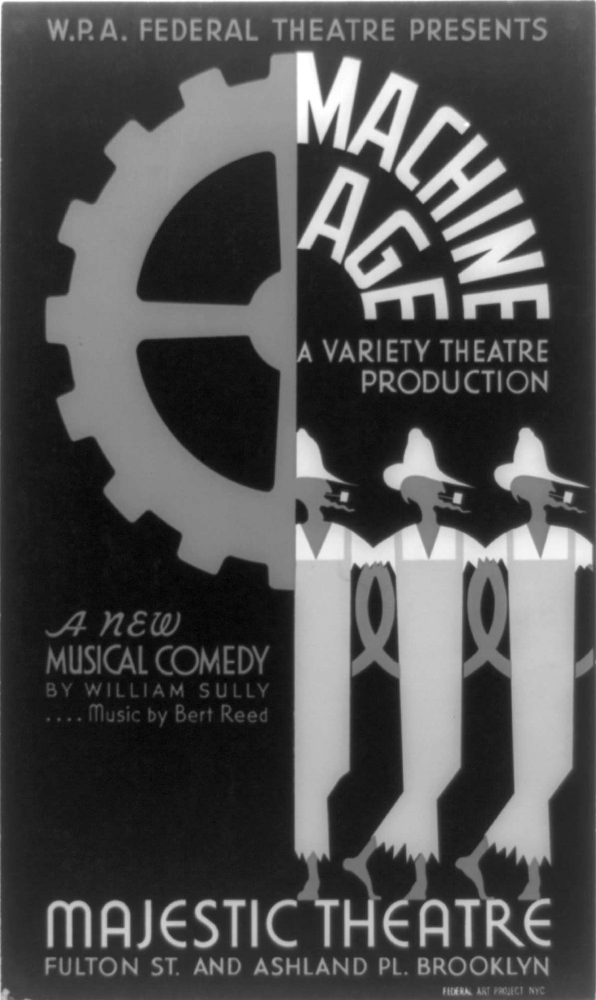

1932年，思想界发生了一件非同寻常的大事。这一年，卡尔·马克思的《1844年经济学哲学手稿》终得出版，与之相伴的是研究所《社会研究杂志》上赫伯特·马尔库塞的一篇出色的评论。这部作品集由莫斯科马克思——恩格斯研究所所长大卫·梁赞诺夫从所里夹带出来，鉴于当时的政治气候，他显然是冒着生命危险。这些手稿，连同青年马克思的其他著作，很快就获得了国际声誉。它们在整体上证明了西方马克思主义，特别是格奥尔格·卢卡奇的许多观点。
青年马克思的作品显示出一种乌托邦特质。它们优先关注人类苦难的人类学和存在主义因素，而不是单纯经济性的资本主义剥削。异化的根源在于无法把握历史的运行并使其顺从于人类的控制。劳动分工即体现出这种情况。它使工人们日益远离他们生产的产品、一同劳动的同伴以及——最终——他们作为个体的可能性。因此，消灭私有财产本身不是目的，仅仅是取得历史控制权的踏脚石。
青年马克思提供了一种末日审判式的视角。自由主义国家中的政治解放服从于解放人类的理想，这是一个没有阶级的生产者的自由联合体。促进个体自主性——或许是革命的资产阶级特有的 道德目标——被融入对于实现“类存在”这一新的群体性和有机性概念的关注之中。改善匮乏或者说“贫困”的世界中的劳动条件，让位于“向自由王国的飞跃”。异化，同时也包括未言明的物化，此时成为激进行动的靶子。诸如此类的想法改变了关于马克思主义的普遍理解，使共产主义政权甚为窘迫，对于法兰克福学派的启发不亚于1968年的激进知识分子。
异化有着漫长的历史。它同乌托邦的联系在《圣经》中有关逐出伊甸园的部分就已出现。失乐园的故事要早于商品交换世界失去目标。《圣经》的寓言不失为人性堕落的佐证，也解释了为什么人们被责罚“要用他们额头的汗水赚取面包”。它还说明了个人之间的信任为何已经丧失，自然缘何以敌人的面目出现，更有趣的是，救赎何以是可能的。团结与和谐遭到放弃。
亚当和夏娃展示了自由意志。他们被逐出伊甸园是自讨的——原因是向邪恶屈服。或许不同的选择能带来天堂的重建。普罗米修斯也许曾试图实现这愿望：他成为马克思喜爱的神话人物是有原因的。但邪恶的神祇因普罗米修斯的自大惩罚了他，正如那些试图修建巴别塔的人们也确切无疑地受了罚。
天堂总是与伊甸园联系在一起。伊甸园是确保人与自然有36机联系的世界。艺术与科学、财富以及技术可以孕育文明，但如同让——雅克·卢梭在他的《论艺术与科学》（1750年）中提出的著名观点，它们破坏了有机共同体，造成了人与自然之间的对立关系。人为的需求由此被创造出来，腐蚀了正直、淳朴、仁爱、诚实等自然美德。只有彻底重建的社会才可能恢复这些价值观，同时克服人们经受的孤独和无意义感——以及死亡的前景。
从圣奥古斯丁到卢梭等众多思想家，特别是浪漫主义者中卢梭的追随者都探讨过这些主题。对于基本思想最好的表达或许来自弗里德里希·荷尔德林，这位深受后来的批判理论家们敬爱的青年黑格尔的密友在《许佩里翁》（1795年）中写道：
然而，首先对异化做出系统分析的是G. W. F.黑格尔。他认为，异化存在于人类远离其规范性目的而其创造物不受其意识控制的情况之下。世界历史是意识所遭受的耻辱，其目的是重新适应人类无意中创造的东西。把异化植根于意识的结构中，可以看作是将意识与现实隔离开来。但黑格尔对潜藏在客观世界背后的主体力量的认识表达了唯心主义的基本愿望，即疏离的世界应该被转变为人的世界。黑格尔的主要关注点在于社会活动以何种方式逃脱意识的方向，以及历史可以说是在人类背后以何种方式发生。
文明整体生而复亡，结果与意图背道而驰，精神生活和政治活动最好的成就都付出了血的代价。黑格尔将历史视为“屠宰台”，尽管人类自由的实现是注定的。这样一个领域可以如此界定：其中的每一个个体依据他/她自身被完全视为一个主体。普遍的互惠最终体现在法治的官僚国家、以所有人自由平等进入的市场为基础的公民社会以及每一个主体都在情感上得到接纳的核心家庭之中。理性推举出这样一个无所不包的互惠领域，因为黑格尔认为，作为理性最高化身的哲学从苏格拉底时代以来便体现出普遍性。
消除异化于是涉及拯救历史的苦难，黑格尔将其称为“绝对精神的骷髅地”。但他并不是乌托邦主义者。实现自由是目的论过程的顶点，在其中，专断地行使权力在一个法治的新国家中遭到否定。在个人依然必须面对其死亡的情况下，即便在“历史的终点”，冲突和生存异化依旧存在。宪政国家只是创造了一个空间，他们在其中终于可以专注于私人的事务而不受外界干涉。
但异化和物化仍旧存在于公民社会剥削性的阶级关系之中。
黑格尔的思想仍然停留在国家层面。这不仅仅是由阶级利益导致的。他没能根据异化的根源存在于资本主义生产过程之中来予以讨论，这也有存在主义的成分：将异化的物质性牵扯进来会涉及否定他的全部计划的资产阶级目标。异化因此在试图消除它的哲学中寻找出路。工人协会、无阶级社会以及马克思所谓的“前历史”的终结都未列入议题。即使最伟大的资产阶级哲学家们也无法构想出某些政治制度能够使社会的运转方式服从于创建它的人们。
黑格尔在《精神现象学》（1807年）中指出，每个历史时代的统治者对于阻止这样的意识的产生都有事关存亡的利益和物质上的利益。他们设法通过意识形态和制度手段使他们的奴仆们相信对他们，即他们的主人的依附。这就是黑格尔和青年马克思的出发点。批判方法成了工具，奴仆们——以及广大无产阶级——通过它意识到他们作为特定秩序的生产者的力量，从这种秩序中真正获益的只有统治者。消除异化因此取决于被奴役者，或者更确切地说是工人的觉醒。
青年马克思认为，讨论国家的美德，或者通过含糊其辞的范畴如主仆或贫富实现某种预制的自由观，只会阻碍对于异化根源及其如何持续存在的认识。因此，在《1844年经济学哲学手稿》中，马克思强调“随着对象性的现实在社会中对人说来到处成为人的本质力量的现实，成为属人的现实，因而成为人自己的本质力量的现实，一切对象也对他说来成为他自身的对象化，成为确证和实现他的个性的对象”。 [4]
黑格尔称整体即真理。他认为资产阶级的自由法治国家已经实现了自由。然而，按照马克思的看法，无产阶级对这种臆断提出了异议。这个被剥夺公民权并且遭受剥削的阶级的存在说明了自由如何被截断。这个阶级在结构上的优势受到了忽视。资产阶级认为，资本主义是建立在利己主义假设之上的，个人是生产活动的主要单位。但这种观点无法形成关于社会现实的构成及其经济生产过程的矛盾的认识。倘若有如马克思从路德维希·费尔巴哈那里学到的，宗教造成人类被其大脑产物所控制的局面，那么在资本主义之下，人类则受到其手造产品的支配。
马克思相信，即使在资产阶级社会日渐富有的时候，工人阶级也会越加贫困。工人阶级在精神上也会日益贫乏。它逐渐成为机器的附庸。对多数人而言，个性、创造性、凝聚力都在遭到削弱。资本主义生产的紧迫任务需要仅仅将其视为生产成本，这种成本必须尽可能保持在最低限度。利润最大化还要求劳动分工，工人阶级中的每一个成员由此同装配线上的其他成员相分离，无法获知其他工作并发展他/她的全部潜能，也不能了解最终生产出来的产品。同样的劳动分工也影响到现代国家。数学公式以超越历史的语言界定营利能力和效率而没有意识到阶级利益的结构性冲突。社会的历史性、可替代性和多变性因此遭到剥夺。
异化界定了这样一种总体性，其永存建立在将人转变为物，或者说物化的基础之上。资本主义日益剥离掉人的人性。它将参与商品生产的真正的主体（无产阶级）当作对象，而将生产活动的真正的对象（资本）转变为现代生活虚构的主体。扭转这个“颠倒的世界”——马克思从黑格尔那里借用的一个观点——或许只能依靠消除《资本论》中提出的“商品拜物教”。或者换种说法，消除异化要求消除物化。这需要意识到将要改变的是什么。世界必须得到新的思考。
青年马克思增加了革命的风险。即使资本主义不断取得成果，激进行动还是将人的苦难作为靶子。官僚主义、金钱和工具性思维具有人类学根源，即便新的生产过程强化了它们的主导地位。卑贱之人自古以来遭到工具式的对待。商品形态和官僚主义可以追溯到古罗马的股票交易和罗马天主教会的等级制度。其弦外之音显而易见。工人们不可能持续满足于要求自由民主制度、社会改革以及严格计算经济利益。无产阶级必须立即认识到其自身乃是历史行动的主体——而不单是外力的对象——其目标是消除异化和阶级社会。

图4 异化和物化摧毁了主体性，将工人转变为生产成本
青年马克思已经勾勒出这样的愿景。然而，在1932年前其作品尚未出名的情况下，对卢卡奇以及随后其他批判理论家阐述（即便不是解决！）异化与物化问题产生重要影响的乃是马克斯·韦伯。作为创作出经典著作《新教伦理与资本主义精神》（1905年）的饱受折磨的学者，以及同情民族主义和帝国主义的自由主义者，韦伯著名的演说《学术作为志业》（1918年）构想了一个启蒙运动的希望正在“不可挽回地消失”，且社会日益被“没有灵魂的专家”和“没有心肠的肉欲享乐者”主宰的世界。
工具理性采用了一种以数学方式定义的效率概念，此概念的前提是把所有任务都变成例行公事。现代生活日益将使用专门知识并在分层指挥系统中严格限定职责范围置于首位。把握全局的能力将消失；德国人所谓的纪律白痴会取代智者；道德标准将降格到科学和政治生活之外的领域。韦伯将未来想象成官僚主义的铁笼——即使他从未明确地使用这个经常与他关联在一起的用语——它更加确定地导致真正的主体性的边缘化。
青年布洛赫和卢卡奇时常出入韦伯在海德堡的著名沙龙，在此结识了埃米尔·拉斯克、海因里希·李凯尔特和格奥尔格·齐美尔。他们都关注异化的现代社会结构以及物化可能引发的后果。韦伯及其圈子的影响明显体现在布洛赫《乌托邦精神》第一版（1918年）和卢卡奇写于1915年并于1920年出版的《小说理论》中。实际上，布洛赫喜欢说他撰写了一半，而卢卡奇撰写了另一半。两部作品都体现了卢卡奇随后提出的“浪漫的反资本主义”。
这一用语意在指明与资本主义的一次重要邂逅，对于其实际运转方式的不解带来的要么是启示般的憧憬，要么是回归自身。这是由于浪漫主义的反资本主义倾向于调和左翼政治学和右翼认识论。《乌托邦精神》和《小说理论》无疑就是这种情况。但它们仍然是具有深远影响的作品。
对于现代生活的异化的思考、天启般的感觉以及严苛的现代性批判，构成了他们对于批判理论的思想遗产。他们每个人都强调生活日渐支离破碎，人际关系也正在瓦解。每个人都期待着一种基于寻求真实经验的（或者更恰当地说是其丧失）新的团结形式以及一种天启般的感觉。每个人都提供了一种新的历史哲学，对实证主义和科学迷恋提出了质疑。每个人也都倡导一种审美——哲学观和一种陷入野蛮的西方世界的新开端。
卢卡奇在他的小册子《列宁》（1924年）中强调，这位布尔什维克领导者以献身于“革命实际”而著称。列宁的《怎么办？》（1902年）所支持的理念是由赤诚的政界知识分子组成先锋政党使革命理想抵挡住改良主义的诱惑。1914年，他独自倡导将国家之间的战争转变为国际性阶级斗争。1917年，列宁提出了“一切权力归苏维埃”的革命口号，他的《国家与革命》（1918年）构想了一个共产主义国家，按照这个词的真正意义，它不再是一个国家。列宁的布尔什维克似乎引领了一阵“东风”，注定要席卷腐朽的文明。他在组织上的设想似乎是某种政治主张的重要部分，在这种主张中一切仿佛皆有可能。无产阶级——或者更确切地说是先锋政党领导下的无产阶级——大概正是新的历史主——客体。
《历史与阶级意识》表达了对于伴随俄国革命而来的复兴与革新的渴望。柯尔施以及葛兰西的作品也不例外，尽管他们没有形而上学工具和启示录式的语言。他们都描绘了一幅获得解放的世界的愿景，它产生于俄国革命以及随之而来的1918至1923年间的欧洲起义。相比于笼罩着工人协会参与式民主的戏剧性、金钱和等级的消除以及具有乌托邦意味的多种文化实验，自由共和主义黯然失色。无论真正的无产阶级的经验意识如何，只有共产主义先锋被认为尚能终结异化的世界。
然而，《历史与阶级意识》1923年甫一出版即成为激烈批判的对象。将无产阶级（或者更确切地说是共产党）视为历史的主——客体被认为是唯心主义，而不是马克思主义的乌托邦式的产物。普遍的看法是卢卡奇夸大了意识对于经济恶化的作用，他的作品也没有讨论具体目标以及行动受到的制度限制。但是，随着马克思《1844年经济学哲学手稿》的出版，卢卡奇的许多观点获得了迟来的辩护。共产国际尤为窘迫，因为在1924年其领导者已经迫使卢卡奇宣布与其杰作决裂。青年马克思的作品恢复了对于多数知识分子倾向于视为僵化顽固的政治意识形态的兴趣。
但异化借由埃里希·弗洛姆的《逃避自由》成为名副其实的流行概念。第二次世界大战于1939年爆发后，纳粹主义成为自由和进步知识分子的头号敌人。弗洛姆揭示出与魏玛共和国资本主义相关的“市场特征”以自我为中心的贪婪品性，如何被新的法西斯政权转变为建立在明确消除自主性基础上的“施——受虐人格”。能够抵制新政权宣传手段的所有公共机构——大众媒体、学校、教会乃至家庭——的破坏导致个体的完全孤立或原子化。
这种极端异化不堪一击。由此形成对于权威（即元首）的认同，致使个人充满仇恨却一心逃避道德责任。社会和心理影响的独特汇合导致了奇特的权威人格结构。
马克斯·霍克海默采用了一种更加统御一切的路径。他的论文《权威主义国家》（1940年）分析了现代自由主义、共产主义和法西斯主义的混合。它们都有赖于官僚式管控、等级与恭顺、宣传与大众文化、分工与机械化劳动。个体同劳动产品、其他工人以及更为广泛、更为包容的个性观念相背离。总体在所有地方都从视野中消失了，个体不过是机器上的一个齿轮，物化乃是常态。政体类型之间的差异或许依然存在，但最终，形式就是内容。事实上，随着曾经与无产阶级联系在一起的目的论希望的落空，抵抗失去了其政治指向。权威主义国家使人们对构建实践理论的能力产生了疑问。
异化和物化因此日益被视为心理和哲学问题，首先需要心理学和哲学解决办法。比如，于尔根·哈贝马斯在《知识与人类的旨趣》（1971年）中假定了一种基于“未失真的沟通”的“理想的言语情境”。这种理想情境在面对面的精神分析中具体起来，在此，分析师与来访者不受外部或物质旨趣的妨碍，决心找出任何特定神经症或异常状态的真正源头。传统哲学形式如实证主义和现象学中缺乏的“可普遍化的旨趣”由此产生。
批判此时获得了确实的基础。其与话语操纵的对抗是从“解放性”基础开始进行的。这具有某些实践意义。激进人士之间的相互理解变得至关重要，每个人也都必须证明对他/她的目标和策略进行了自我批评。毕竟在原则上，未失真的沟通是一切形式的协商民主的基础。以往对于现实的历史构成的关注，此时也可以作为技术问题加以对待。哈贝马斯表明了他的立场：“在自我反思的力量中，知识与旨趣合二为一。” [5]
然而，这种新的心理——哲学路径的论证和定义问题很快便出现了。理想的言语情境是否仅仅是社会行动在方法上的起点，还是具有自身规则的固定的哲学范畴？是就社会批判理论来理解未失真的沟通，还是将其理解为拥有自身规则的语言哲学新变体的基础？哈贝马斯做出了“语言学转向”。
批判理论因此开始向分析哲学迈出第一步。哈贝马斯的另一部经典著作《交往行为理论》（1981年）诚然还是警告道，工具理性和晚期资本主义的制度力量对个人的生活世界构成了威胁。与历史相隔绝的交往行为及其语言规则成为反抗的工具。
但参与反抗的动力完全是另外一个问题。在不涉及生产过程或政治组织的情况下，对于承认和认同的新的关注变成首要问题。
然而，这类需求经常产生冲突。哈贝马斯的弟子阿克塞尔·霍耐特试图通过强调个人的“关怀”能力处理源于异化和物化的这类冲突。
鉴于关怀涉及承认他人并限制更加麻木不仁的利己主义，移情占据了中心位置。异化和物化此时被作为哲学和经验问题，需要以哲学为基础的经验回应。道德规范又一次同政治生活的现实割裂开来。制度性权力失衡、团体利益的结构性冲突以及资本主义积累的急切需要淡出了视野。具体说明关怀等问题的限制条件，或者应对异化和物化的适当的行为方式，成为次要问题。对于形成任何有意义的团结——和反抗——概念，其削弱性影响不言而喻。
然而，公平地说，法兰克福学派核心集体的多数成员都认为，（从既存体制内部）为异化和物化开出药方在最好的情况下也是无效的，在最坏的情况下更是原则上的妥协。无产阶级一失去革命根基，悲观主义便在核心集体中弥漫开来。马尔库塞在《哲学与批判理论》（1937年）中已经指出，基于实现自由王国这一前景的黑格尔和马克思的辩证法受到了阻碍，激进变革不再列入议程。
官僚制的铁笼似乎导致了“个人的终结”。这是霍克海默在《理性之蚀》（1940年）中描述的景象。资本主义不再产生掘墓人，极权主义影响着政治光谱的两极：霍克海默直言不讳地宣称“两极相遇了”。关于社会主义和历史演进的传统设想因此需要修正。官僚社会的整合性力量、有组织的反对力量的无能为力、进步的倒退性以及培养自主性的需求——重中之重——都需要一个新的框架进行讨论。如果革命不能再等同于解放，那么反抗必须改变其性质。这终将涉及直面文明、进步以及启蒙。
批判理论家们在《1844年经济学哲学手稿》中看到了对于结束人类“前历史”压迫的新的重视。社会主义此时被视为对待人的方式，而不是一套固定的制度和政策。青年马克思似乎表现出乌托邦倾向，也呈现了从利己、暴行和异化中解放出来的新人的图景。反抗资本主义的革命如今转变为某种旨在改变人类境况的东西。批判家们认为此时不可能预见革命成功会带来什么。然而，理解革命的失败会更为容易。新发现的青年马克思的著作对于挑战有关社会主义的灰暗、单调理解起到了重要作用。
埃里希·弗洛姆的《马克思论人》（1961年）开始受到广泛的欢迎，并且启迪了一代美国激进人士。然而，即便在这之前，弗洛姆也一直关注异化现象。他关于宗教与心理学的著作便说明了这一点。资本主义将遭到反对不仅仅因为它在物质上是剥削性的，而且由于其非人的市场力量体系要求个人将彼此作为潜在的竞争对手和达到目的的手段。问题对他来说不仅仅是人类已经无法掌控的机械化社会，而且是它促成的内在被动和精神迟钝。因此，他的批判社会心理学的前提是阐明并肯定反资本主义价值观以及个体发展的进步的可能性。这是将社会主义重新塑造为一种人文主义，同时淡化狭隘的阶级问题和革命的重要尝试的基础。
然而，亨利·帕赫特曾告诉我，他在1932年阅读《1844年经济学哲学手稿》时的第一反应是“此乃马克思主义的终结”。他是一位社会主义活动家和政治史学家，也同法兰克福学派有所联系。帕赫特的这类观点如今听起来很奇怪，但在20世纪30年代的环境下是有道理的。马克思主义依然被理解为具有科学基础和目的论保证的面面俱到的哲学体系。共产主义运动笼罩着一道光环，社会民主主义似乎依然代表着对于政治独裁和社会不公的唯一的真正反抗。社会主义运动和共产主义运动对于实现乌托邦的意愿，不如实现主要产业国有化和市场监管、以（民主或独裁的）无产阶级专政代替资产阶级统治，并且引入一种或许基于科技进步的新的世俗意识形态那么强烈。
更为传统的观念远不如新方法以其对于异化和物化的抨击所带来的东西引人注目。但其目标清晰，并将政治置于首位，其中自有令人钦羡之处。怀旧是没有必要的。只有与随后的奇特论调和乌托邦式的夸张相比较时，其哲学和政治目标才是适度的。